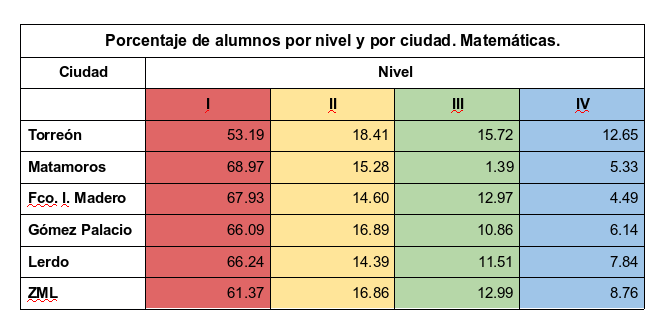
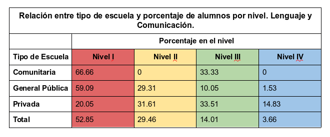
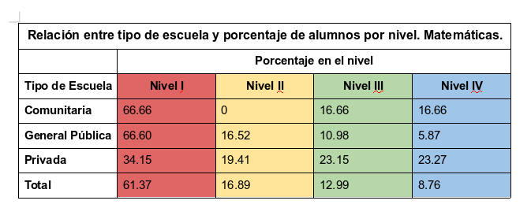

La Prueba PLANEA Educación Básica 2018 se aplicó para el sexto grado de primaria y se llevó a cabo en junio del presente año, con el propósito de evaluar el aprendizaje de los estudiantes en el campo de Lenguaje y Comunicación (LC) y de las Matemáticas (MAT).
Los resultados de la prueba ubican al alumno en uno de 4 niveles secuenciales, el primero significa un nivel insuficiente de conocimiento, el siguiente nivel es un entendimiento básico del lenguaje y la comunicación así como de las matemáticas, el tercer nivel es satisfactorio y el cuarto y último nivel es sobresaliente.
A nivel nacional en cuestión de LC el 49% de los alumnos logró pasar el primer nivel, 33% el segundo, 15% tuvieron un nivel satisfactorio y solo 3% fueron sobresalientes, lo que significa que llegan a comprender y evaluar textos complejos y gráficas.
Por el lado de la evaluación de MAT, el 59% alcanzó un dominio insuficiente, el 18% llegó a nivel básico, el 15% a satisfactorio en dónde puede resolver problemas de operaciones básicas con decimales y fracciones y solo el 8% llegó a un nivel sobresaliente, en dónde las operaciones implican el uso de fracciones y conversiones, así como cálculo de áreas y perímetros irregulares y estimación de la media y mediana de un conjunto de datos.
Para la Zona Metropolitana de La Laguna y Francisco I. Madero se evaluaron 21,334 alumnos pertenecientes a 807 escuelas en sus diversos turnos, de las cuales 130 son del tipo privadas, 6 comunitarias y 671 públicas.
Adicionalmente se caracterizan las escuelas por su grado de marginación y se dividen en 441 como grado bajo o muy bajo, mientras que 269 se clasifican con grado de marginación medio y 86 con alto o muy alto.
En cuestión de puntajes, a nivel nacional los resultados son muy similares respecto al 2015, con una diferencia de un punto para el caso de la prueba de LC ubicándose en 501, mientras que en MAT pasó de 500 a 503; en cuanto al Estado de Coahuila, estas diferencias fueron de 511 a 516 para LC y de 512 a 514 en MAT, lo que significa una mejora en la evaluación. Para el caso del Estado de Durango, en LC se mantuvo con la misma puntuación de 489, mientras que en MAT descendió de 501 a 495 puntos.
Para el caso de la ZML incluyendo a Fco. I. Madero, Torreón es el municipio con la mayor proporción de alumnos que alcanzaron el nivel IV de sobresaliente, 5.87% en la prueba de LC y 12.65% en MAT, así como en nivel satisfactorio con 19.32% en LC y 15.72% en MAT. En contraste, Matamoros obtuvo la menor proporción en nivel satisfactorio para LC con 8.75% y en MAT con 1.39% de los alumnos evaluados.
Matamoros y Fco. I. Madero son los municipios con la mayor cantidad de alumnos en nivel insuficiente, con 63.41% y 61.51% respectivamente para LC y con 68.97% y 67.93% para MAT.
Existe también un contraste entre el tipo de escuelas, las cuales se clasifican en privada, pública y comunitaria. Para el caso de las escuelas privadas, estas tienen el menor porcentaje de alumno en los niveles más bajos, para el caso de LC, sólo el 20% se encuentra en este nivel a diferencia de las escuelas públicas en donde el 59% tiene un nivel insuficiente de conocimiento.
Para la evaluación de MAT, en las escuelas privadas el 34% de sus alumnos tienen nivel insuficiente mientras que para las públicas es del 66%, resaltando las diferencias en cuanto a la enseñanza.
En los niveles satisfactorio y sobresaliente se ve la misma característica, ya que mientras en escuelas privadas la proporción de alumnos en nivel III y IV es de 33.21% y 14.83% para la prueba de LC y de 23.15% y 23.27% para MAT, en las escuelas públicas esta proporción es de 10.06% y 1.53% para LC y 10.98% y 5.87% en MAT.
Por parte de las escuelas en específico, existen 53 escuelas evaluadas que obtuvieron un 100% de sus alumnos con nivel insuficiente en LC y 73 en MAT, en contraste con 27 que no tuvieron ningún alumno en este nivel para LC y 22 para MAT.



